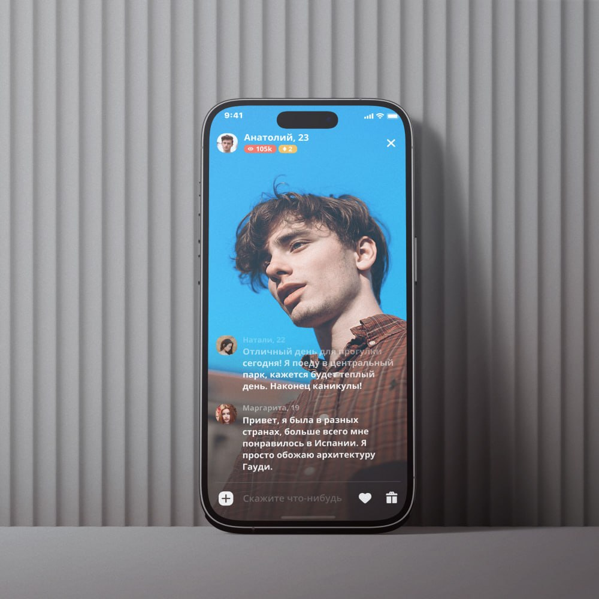

Visual direction
Собираю визуальный язык продукта: типографика, композиция, цвет, иконки, иллюстрация и целостность интерфейса.
Product / UX/UI Designer · интерфейсы · визуальные системы · прототипирование
Product / UX/UI Designer
Проектирую цифровые продукты с сильной визуальной системой — от структуры интерфейса и сценариев до hi-fi UI, прототипов и дизайн-систем.
Домашние сервисы · картография и аналитика · мобильность · путешествия · социальные продукты · e-commerce

Собираю визуальный язык продукта: типографика, композиция, цвет, иконки, иллюстрация и целостность интерфейса.
Проектирую понятные интерфейсы для мобильных и веб-продуктов — от пользовательских сценариев до hi-fi экранов.
Строю компоненты, состояния и паттерны, чтобы продукт сохранял визуальную и функциональную целостность по мере роста.
Делаю прототипы, анимацию и спецификации, работаю с разработкой до реализации интерфейса.
Я работаю на стыке продуктового дизайна и сильной визуализации. Мне важны не только логика и сценарий, но и то, насколько точно продукт выглядит, читается и ощущается в использовании.
В опыте — пользовательские сервисы, картографические и аналитические продукты, мобильные приложения, travel, social и e-commerce.
Образование в живописи и художественной педагогике даёт визуальную базу, которую я переношу в интерфейсы: композицию, иерархию, работу с цветом, ритмом и деталями.
Здесь показаны реальные публичные проекты. Без выдуманных метрик и без попытки представить каждую работу как исследовательский кейс.
Домашние сервисы и e-commerce
Мультиролевой сервис домашних услуг: клиентское приложение, интерфейсы исполнителей, сайт и дизайн-система.
Смотреть кейс →
Социальный мобильный продукт
Проект мобильного интерфейса с выраженной визуальной подачей и сфокусированной продуктовой логикой.
Смотреть кейс →
Путешествия и навигация
Мобильный путеводитель для iOS и Android.
Открыть проект →
Социальный сервис
Приложение-напоминание для связи с родными и близкими.
Открыть проект →
Ранние проекты показывают диапазон визуальной и интерфейсной практики.
Некоторые проекты нельзя публиковать по условиям соглашений о конфиденциальности. Среди них — интернет-магазин и веб-сервисы.
Запросить закрытые работыИнтерфейсы, прототипирование, дизайн-система, анимация и паттерны взаимодействия; иконки, презентации и визуальные материалы; взаимодействие с разработкой и контроль реализации.
Внутренние цифровые сервисы: картографический информационно-аналитический продукт, заказ оборудования и инфраструктурные инструменты.
Веб-дизайн, фирменный стиль и рекламные материалы.
Веб- и мобильные интерфейсы, иллюстрации, презентации, фирменный стиль, полиграфия и реклама.
Интернет-магазин, каталоги, POS-материалы, наружная реклама и 3D-визуализация проектов.